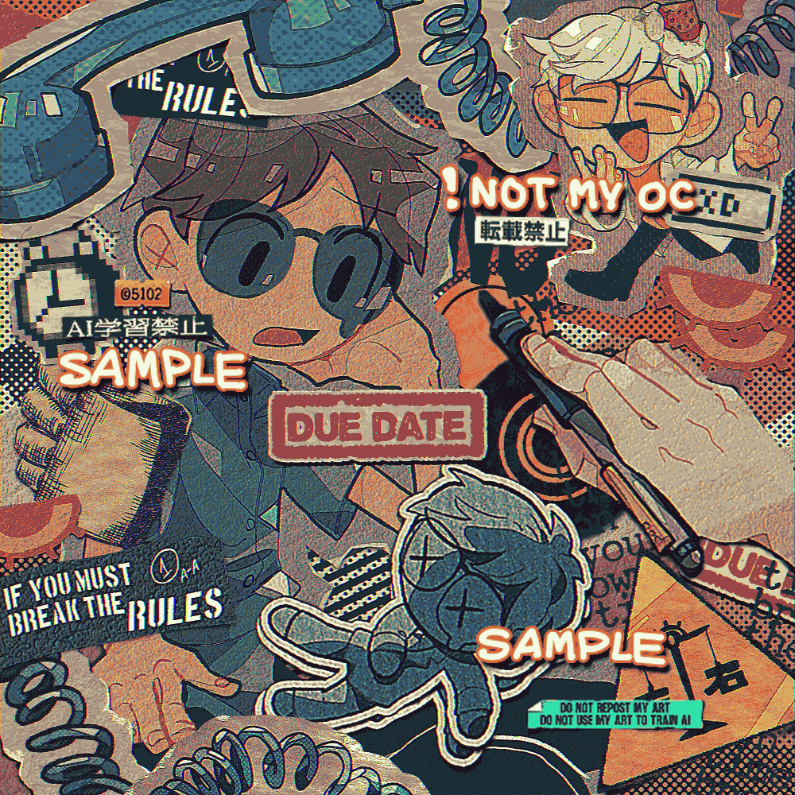

初めての有償依頼でした。私の絵に「お金を払う価値がある」と認めて下さった方の為に絵を描くので、今までにない程に絵へのこだわりとか、いただいた資料へのリスペクトとか、自分の絵の良さを意識しながら描いた。非常に楽しかった。
影つけ作業、ハイライト付け作業が特に面白かった。最近はハイライトに「フチつき塗りつぶしペン（メディバンペイント）」を使う事が多いのだが、輪郭のあるハイライトってすごく存在感があって良い。
通常のまま上書きしても、オーバーレイにして馴染ませても良い。
今回のこの絵、全てデジタルだが、本当に紙っぽく見える部分がチラホラあり、私自身もとても気に入っている。
ご依頼誠にありがとうございました。
2022/05/14
 Commission
Commission